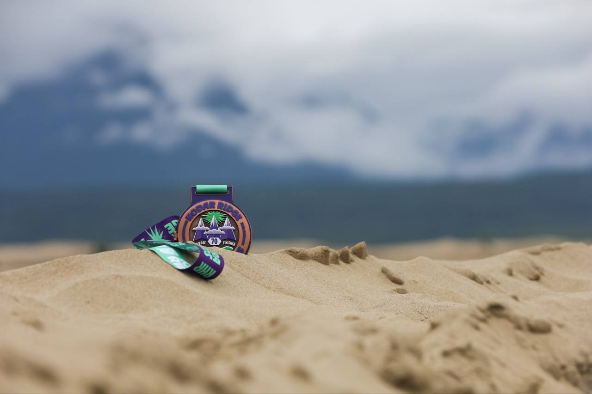

Планировал пробежать дистанцию 50k на гонке Kodar Ridge Chara Sands Life Journey Race, которая составляла по факту 57 км.Мне повезло с проживанием в Новой Чаре, друг смог найти квартиру, которая находилась в 20 м. от ЭКСПО и в 500 м. от старто-финишного городка. Кто-то жил в поезде от организаторов, который прибыл из Нерюнгри, а кто-то вообще в палаточном городке.
Приключение началось еще в субботу, когда надо было пройти проверку экипировки и получить стартовый номер. Но, не без помощи друзей, этот этап был пройден. Ну а следующим этапом, нужно было решить, что реально буду брать с собой на трассу.
В итоге вечером собрал рюкзак со следующей экипировкой: гидратор с водой объемом 1,5 л, 8 гелей, 4 солевых таблетки, 4 таблетки с магнием, пластырь, бинт, гемостатическая губка, нож, свисток, стакан, power bank. Обновленный трек дистанции был закачан в часы.
Из одежды ничего дополнительно не брал, на себя одел: гетры, халф тайтсы, футболку, мембранную куртку, кепку, очки и кроссовки Saucony Peregrine 14.
Постарался лечь спать пораньше, в 22:30, но в 00:30 меня разбудили соседи, и я уже не смог потом уснуть, удалось поспать немного под утро, встал в 4:40. Принял душ, выпил кофе из дрип-пакета и съел гранолу с молоком (рискованно, ну ладно).
Утром в воскресенье, в день старта, собравшись и отправившись с друзьями на старт в 5:40, обсудили новость, что большую часть участников дистанции 120k сняли (они стартовали в субботу в 10:00 утра), так как из-за проливных дождей, резко поднялся уровень воды в реке, к которой они подошли уже этой ночью (но часть спортсменов успела ее пройти).
Старт был запланирован в 6:00 утра. Должны были стартовать участники дистанций 50k и 70k.
И уже прямо перед стартом, услышал от Михаила Долгого (организатора) важную новость - из-за высокого уровня воды мою дистанцию 50k закрывают, и участникам этой дистанции предложили 2 варианта: бежать 70k или, если не готов, можно было тут же на месте перерегистрироваться на дистанцию 30k и идти на трансфер до старта, так как у них старт, также как и у 120k, был из поселка Чара в 9:00.
Я решил бежать 70k, которая по факту была 67 км.
Причем требования по экипировке отличались у этой дистанции, но самое главное, у меня не было трека, но помог друг с подругой, которые планировали и бежали 70k, они закачали мне тут же трек в часы.
И вот мы, немного задержавшись, стартовали в 6:15.
Началось все даже очень хорошо. Стартовал где-то в середине, участников было около 270. Бежал бодро по дороге первые 7 км до железной дороги и камней по 5:30. Потом была каменистая дорога около железнодорожного полотна 2 км. Здесь я встретил друга и мы побежали вместе.
Дальше бежали по проселочной дороге с лужами, болотами 4 км., местами получалось разогнаться немного, но как только появлялась лужа или болото, замедлялся. Попался навстречу первый участник 120k, потом встретили еще нескольких по дороге.
И вот тут началось самое веселье - был брод через горную реку Верхний Сакукан с ледяной водой и сильным течением с уровнем воды по пояс. После того, как перешли по тросу, был первый пункт питания Дюна, где перекусил огурчиком, апельсинами и выпил колу.
Дальше был участок по проселочной дороге с грязью, лужами и местами болотом длинной 14 км. Также на этом участке начались подъемы длиною 9 км., было тяжело, темп упал, в подьем шел пешком, на спусках пытался разогнаться, очень повезло, что бежал с товарищем. Иногда пробегали мимо озер.
В одном месте был очень красивый небольшой участок по камням.
После этого участка опять был брод через реку Средний Сакукан, причем реку перебегали в трёх местах, и тоже ледяная вода и сильное течение. Здесь, кстати троса не было. Перешел этот брод с другом, которым бежал с 7 км, после брода был второй пункт питания Салуза Секундус, на нем поел снова соленые огурчики, апельсины и выпил колы, дальше обогнал его и бежал один.
После преодоления этого брода снова была проселочная дорога с грязью, лужами и болотом 12 км. С учетом этого участка уже было преодолено 39 км. и уже ноги стали уставать, мышцы забиваться.
В конце участка на 39-м км. был третий пункт питания, на котором также поел огурчики и апельсины, выпил колу.
Ну и после этого участка по традиции был снова брод через ту же реку Средний Сакукан, ледяная вода и сильное течение, но был натянут трос, который очень помог, так как я уже бежал один.
Дальше было 2 км тропы, по окончанию которой начались долгожданные пески.
По песку местами было тяжело бежать, особенно в подьем, но на спусках немного разгонялся, но все равно темп был очень медленным, 10-11 мин. на км., еще сказывалась накопленная усталость, так как это уже составляло 53 км.
На середине участка меня догнал товарищ, и мы побежали дальше вместе. Но под конец песков он убежал вперед и я снова остался один. По дороге стали попадаться участники с дистанции 30k.
После песков снова ушли в лес, я догнал товарища, и через 1 км. вышел на наш трек, по которому бежали в эту сторону и в итоге выбежал к четверному пункту питания Дюна, который был первым, и броду через реку Верхний Сакукан. На пункте питания как всегда съел соленые огурчики, апельсины и выпил колу. Встретил друга, которого сняли, так как в лимит не уложился. Немного поболтали с ним и я побежал дальше, вернее пошел переходить снова брод.
Ну а дальше побежал по уже знакомой дороге с лужами, грязью и болотом, причем уже разбитую участниками. Мой товарищ снова убежал вперед. Дальше просто терпел и пытался бежать, местами пытался разогнаться и снова втыкался в болото, ноги были мокрые и холодные от болота, кроссовки от ледяной воды как будто стали тверже, на левой ноге натер мозоль на пятке, что создавало дискомфорт.
Через 4 км была железная дорога, камни, встретил подругу на камнях, которая бежала 30k, немного поговорили, и я убежал дальше.
Потом был мост и дальше уже дорога, с которой все начиналось.
Дальше была просто терпежка. Товарища, с которым я пробежал большую часть трассы, не было видео даже на горизонте, и я начал разгонять себя. Получилось выйти на темп 5:15-5:20, пробежал 3 км., почему-то думал, что дистанция всего 63 км., но финиша все еще не было. Догнал товарища, он стал замедляться, видно что очень устал, от него узнал, что до финиша еще 4 км, я снова попытался разогнаться. Оставшиеся до финиша 4 км пробежал с темпом 5:30, не знаю откуда у меня взялись силы. Ну а на финише меня встретили с очень красивой медалью (на которой кстати было написано 50k, но ничего), она открывалась и внутри был тот самый чарский песок, а еще сверху на ленте был драгоценный камень Чароит. Ну и конечно же финишная гречка, куда без нее.
В итоге мое время прохождения дистанции 67 км. составило 8:14:47, финишировал 26-м в абсолюте среди 270 участников. И это моя самая длинная дистанция, до этого я бегал максимум 55k.
Ну а вечером себе позволил немного пива с друзьями с разговорами про эмоции и впечатления от этой гонки.